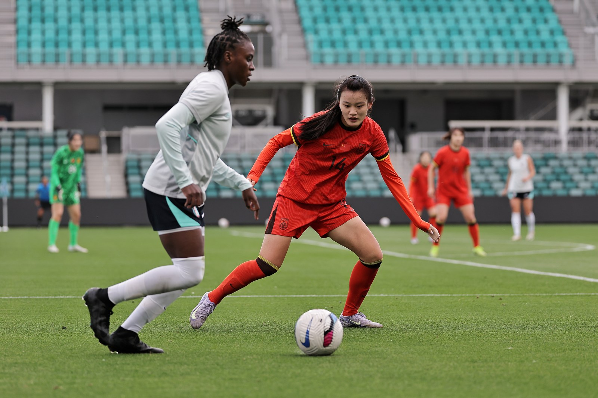
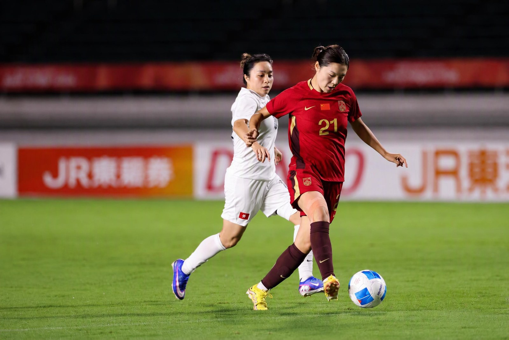
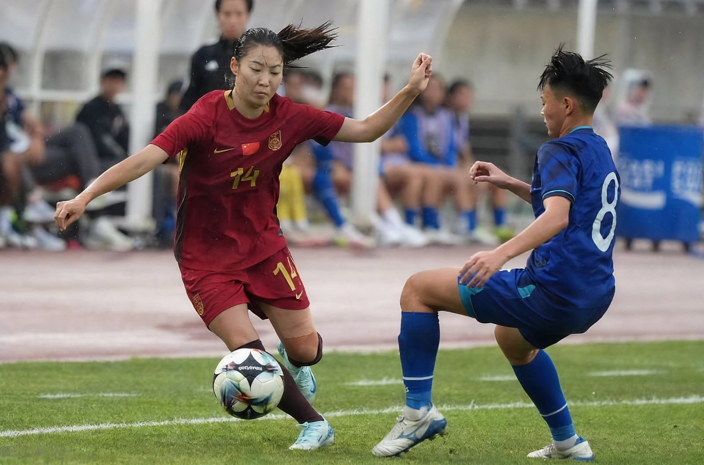
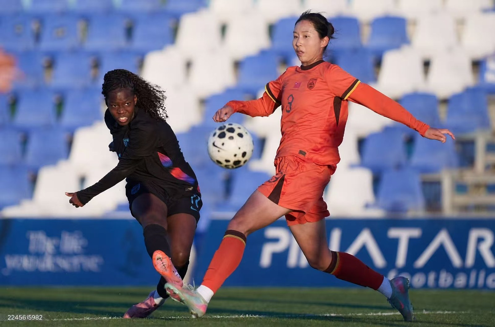
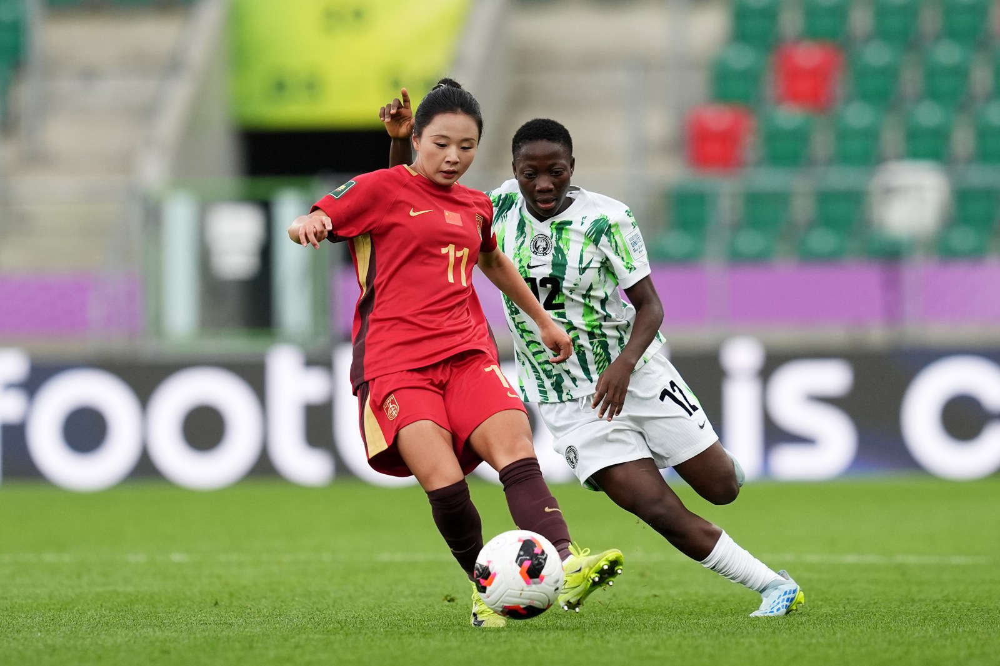

China
Qiao Ruiqi
Centre Back / Full Back
Highlight videoCHINA WOMEN’S FOOTBALL INTELLIGENCE
Discover our women’s football players from China. Explore their profiles, watch them in action and find your next team connection.
Explore our players ↓
THE PLAYER COLLECTION / 2026
Centre Back / Full Back
Highlight video
ChinaSecond Striker / RM / RB
Highlight video
ChinaAttacking Midfielder / Second Striker
Highlight video
ChinaCentre Back
Highlight video
ChinaAttacking Midfielder / No. 8 / No. 10
Highlight videoNo players match. Try another name or position.
BEIJING YUNSIGHT CONSULTING
Player enquiries, full profiles and opportunities.
Yingyi Chen · FIFA Agent #202411-8532